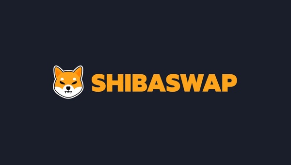

Token Swapping
Users can exchange supported tokens through decentralized liquidity pools. Before confirming a trade, users should review the quoted rate, price impact, slippage, network, and gas costs.
Shiba Swap is a decentralized trading and liquidity platform designed for users who want to swap tokens, participate in liquidity pools, and explore DeFi opportunities across Ethereum and Shibarium.

Shiba Swap is a decentralized exchange, commonly called a DEX, that allows users to interact with supported digital assets directly from a compatible Web3 wallet. Instead of relying on a traditional centralized exchange account, users connect their wallet, select a trading pair, review transaction details, and approve the transaction on-chain.
The platform is closely connected with the Shiba Inu ecosystem and supports DeFi activities such as token swapping and liquidity provision. Its broader ecosystem includes assets such as SHIB, BONE, LEASH, and TREAT, subject to network and platform support.
Users can exchange supported tokens through decentralized liquidity pools. Before confirming a trade, users should review the quoted rate, price impact, slippage, network, and gas costs.
Liquidity providers can deposit supported token pairs into pools and may receive a share of eligible trading fees. Returns depend on volume, pool conditions, fees, and market movements.
Shiba Swap v2 introduces concentrated-liquidity mechanics, allowing providers to select price ranges and manage positions represented by NFTs rather than traditional fungible LP tokens.
Depending on the active product and program, users may access liquidity incentives, staking-related opportunities, or ecosystem rewards. Availability and terms can change.
The platform is designed around the Shiba Inu ecosystem, including SHIB, BONE, LEASH, and TREAT, along with other supported assets on connected networks.
No conventional username-and-password account is required for basic DEX interaction. Users connect a compatible wallet and remain responsible for transaction approvals and private-key security.
Shiba Swap has been associated with both Ethereum and Shibarium. Ethereum provides access to a broad token ecosystem, while Shibarium is the Shiba Inu ecosystem’s Layer 2 network, designed to support lower-cost blockchain activity.
Always confirm the selected network before trading or adding liquidity. A token or pool available on one network may not be available on another, and sending assets to an incompatible network can cause loss.